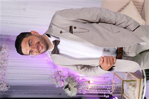

Sehr geehrte Damen und Herren,
als Full-Stack Developer entwickle ich Web-Anwendungen und KI-Plattformen, die im Unternehmensalltag tatsächlich im Einsatz sind. Diese Erfahrung aus der professionellen Softwareentwicklung möchte ich bei Ihnen einbringen und gezielt weiter ausbauen.
Nach meinem erfolgreich abgeschlossenen B.Sc. Informatik an der TH Köln bin ich aktuell bei der KERAVONOS GmbH in Gummersbach tätig. Dort entwickle ich moderne Web-Anwendungen und KI-gestützte Plattformen, darunter einen unternehmensinternen Echtzeit-Chat sowie die B2B-Sales-Plattform Pronto. Mein technischer Schwerpunkt liegt auf Python, FastAPI, Vue 3 und TypeScript sowie der Integration von KI-Diensten wie OpenAI und Claude. Erfahrung im direkten Kundenkontakt konnte ich zusätzlich in Projekten für die ABUS Kransysteme GmbH sammeln.
Ein gutes Miteinander im Team ist mir besonders wichtig. Ich arbeite mich zügig in neue Themen ein und kommuniziere sicher in Deutsch, Französisch, Englisch und Arabisch, im Team ebenso wie im direkten Kundenkontakt. Wissen ist für mich Kapital, in das ich kontinuierlich investiere.
Gerne erzähle ich Ihnen in einem persönlichen Gespräch mehr über meine Projekte und meine Arbeitsweise.
Mit freundlichen Grüßen
Omar Fourati